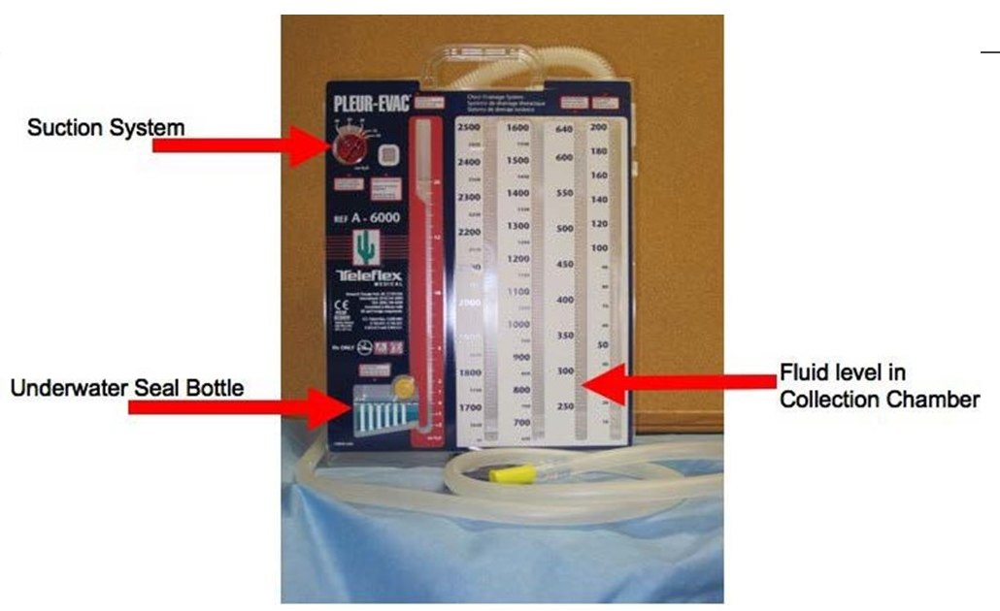
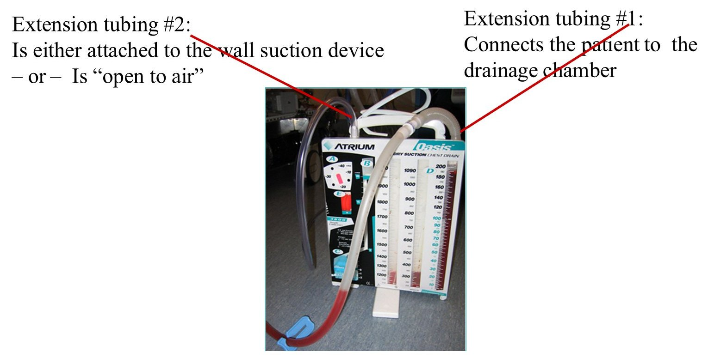

Review · Topic 3
Chest Tubes
The Drainage System
For further study, see Med Surg I Week 2 Ticket to Clinical – Chest Tubes.
A chest drainage system gets air and fluid out of the pleural space and lets no atmospheric air back in.
| Chamber | What It Does |
|---|---|
| 1. Collection chamber |
|
| 2. Water-seal chamber |
|
| 3. Suction chamber |
|

To Suction
- The second extension tubing runs from the air vent to wall suction.
- Nearly everyone starts on suction.
- No walking in the hall while on wall suction.
To Underwater Seal (UWS)
- The air vent is open to air. No suction.
- Turn off the wall suction and take the tubing off the air vent.
- Tolerated well for a period of time, by respiratory status and chest x-ray: the provider discontinues the chest tube.
- Walking in the hall is fine with two people. One carries the system below the level of the chest.

Never occlude or clamp the air vent. It is either open to air or connected to wall suction. Suction turned off with the tubing left on traps the air, and the backed-up pressure causes a tension pneumothorax.
Assessment and Management
The Patient
- Out of bed unless contraindicated, with aggressive pulmonary toilet.
- Head of bed up (Fowler's). Ventilation is better than supine.
- Keep the collection system below the level of the chest. Raised above it, the drainage runs back into the pleural space.
- Range of motion for the affected shoulder: active, or passive if necessary.
- Teach: never disconnect the chest tube, as for a trip to the bathroom.
| Where to Look | Assess and Manage |
|---|---|
| Insertion site |
|
| Extension tubing |
|
| Collection chamber |
|
| Water-seal chamber |
|
| Suction chamber |
|
Tidaling and Bubbling
Both are read in the water-seal chamber.
Tidaling
- The water bobs up and down as the patient breathes.
- Reflects the pressure changes in the pleural space.
- Expected when the chest tube is to UWS. It shows a straight shot from the water seal to the pleural space.
No Tidaling Means One of Three Things
- The lungs have re-expanded, and the chest tube is about ready to come out.
- A kink or obstruction in the tubing.
- Suction is on.
Intermittent Bubbling
- Normal and expected when a pneumothorax is present. It is the air getting out.
- Appears on exhalation, coughing or sneezing, which raise intrathoracic pressure.
Constant Bubbling
- Never normal. Ask whether there is a leak in the system.
- Gently apply a padded clamp on the drainage tubing, close to the occlusive dressing.
- Bubbling stops: the leak is at the exit site or inside the patient. Notify the provider.
- Bubbling continues: the leak is between the clamp and the drainage system. Check the connections or replace the system.
Clamping and Accidents
Never clamp a chest tube for transport, or when the tubing is accidentally disconnected. Clamping risks a pneumothorax.
| Accident | Next Best Nursing Action |
|---|---|
| Whole chest tube pulled out of the chest | Cover the exit site with an occlusive dressing at once, such as sterile petroleum (Vaseline) gauze on a 4x4. Atmospheric air entering the hole causes a tension pneumothorax. |
| Tubing becomes disconnected | Put the end of the tube in a bottle of sterile saline to recreate the underwater seal, then get a new setup and reconnect the patient. |
Chest Tube Removal
Steps of Removal
- Chest x-ray shows the lung has re-expanded, and fluid drainage has ceased.
- Nurse: premedicate with an analgesic, teach and support the patient.
- Provider: cuts the sutures and applies sterile petroleum gauze.
- Patient takes a deep breath and bears down, which keeps atmospheric air from being sucked into the chest. The provider removes the tube.
- An airtight dressing is applied. Mark any drainage with DIT, and reinforce or change the dressing per protocol.